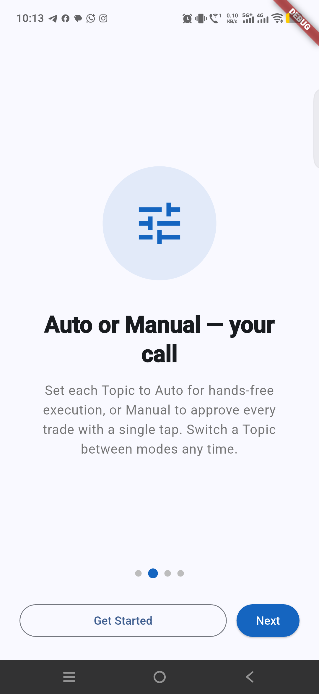
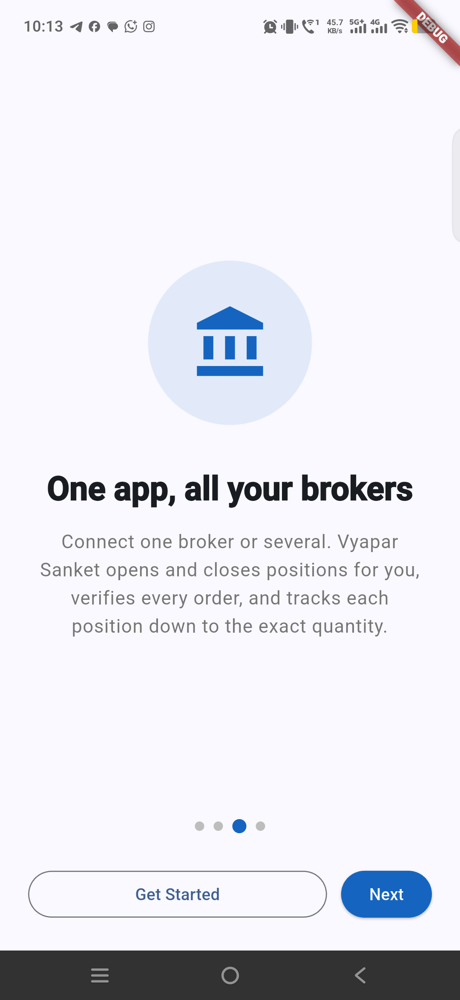

An alternative to mutual funds, with the fund manager in your pocket.
Vyapar Sanket lets users choose a goal, receive signals from empaneled SEBI-registered partner organizations, and automate position opening and closing through their own broker-connected setup.
The website now shows the actual app before login.
These screens were captured from the connected Android phone without clearing app data, logging in, or fabricating product UI.
Signals delivered live

Auto or manual mode

One app, all brokers
Direct comparison
Traditional fund control versus Vyapar Sanket control
Mutual funds pool decision-making and costs around a fund management model. Vyapar Sanket is built for users who want goal-led execution signals while keeping operational control closer to their own account.
Mutual fund model
Money is paid into a fund management structure.
Fund manager controls allocation and timing.
User receives profit or absorbs loss after charges.
Charges can include fund manager fees, exit loads, entry loads where applicable, and other fund costs.
Vyapar Sanket model
The app sits with the user on Android.
User selects the market goal and broker-connected setup.
Empaneled SEBI-registered partner signals drive entries and exits.
Open and close position workflows can run on autopilot, subject to configured controls and market risk.
Pocket fund manager
Choose the intent before the signal starts working.
Short-term trading
For users who want faster signal cycles, defined entry and exit behavior, and active position tracking.
Long-term investing
For users who want partner-led investment signals aligned to a longer holding period and lower action frequency.
User-side control
The experience is designed around the user's own app, broker, permissions, and decision boundary.
Past signal performance
Research360 monthly gross signal returns.
Closed trades by exit month. Each segment shows gross signal return, win rate, and closed trades. These are gross signal figures, not investor account returns.
Best intraday month421.88%
Apr 2026 gross signal return
Best swing month250.12%
Apr 2026 gross signal return
Best long-term month125.11%
May 2026 gross signal return
Rules: Intraday 0 days; Swing 1-90 days; Long term 91+ days. Months without all three segments are removed.
Month
Intraday
Swing
Long Term
Aug 2026
Return: 98.73%Win: 58.92%Trades: 4,980
Return: 184.03%Win: 60.80%Trades: 176
Return: 94.63%Win: 73.33%Trades: 15
Jul 2026
Return: 239.59%Win: 58.40%Trades: 5,324
Return: 197.67%Win: 61.03%Trades: 213
Return: 19.28%Win: 75.00%Trades: 20
Jun 2026
Return: 339.11%Win: 59.43%Trades: 4,570
Return: 177.47%Win: 63.89%Trades: 180
Return: 38.08%Win: 75.00%Trades: 4
May 2026
Return: 329.97%Win: 59.50%Trades: 4,193
Return: 164.34%Win: 63.45%Trades: 145
Return: 125.11%Win: 80.00%Trades: 10
Apr 2026
Return: 421.88%Win: 61.10%Trades: 4,936
Return: 250.12%Win: 69.39%Trades: 147
Return: 2.34%Win: 60.00%Trades: 5
Mar 2026
Return: 248.53%Win: 60.50%Trades: 3,934
Return: -124.94%Win: 41.84%Trades: 98
Return: 4.50%Win: 100.00%Trades: 1
Feb 2026
Return: 10.60%Win: 58.95%Trades: 648
Return: 75.17%Win: 75.61%Trades: 41
Return: 80.73%Win: 100.00%Trades: 5
Verify source data
Gross Signal Return is the sum of all closed trade returns in that month and segment.
Past performance is not a guarantee of future results. Gross signal returns do not include brokerage, taxes, slippage, execution delays, capital allocation differences, user settings, or app and partner charges.
Signal to execution
From partner research to app-led position actions.
01
Partner publishes
Empaneled SEBI-registered partner organizations publish market signals for supported goals.
02
Vyapar Sanket receives
The Android app pulls the relevant signal and checks the user's configured goal and account state.
03
Position opens
Eligible open signals can place orders through the connected broker workflow.
04
Position closes
Close signals help exit positions without waiting for a separate manual instruction cycle.
Product registration
See the registration flow before installing.
The product registration video shows the setup path for users getting started with Vyapar Sanket and the Layr0-connected trading workflow.
Markets carry risk. Automation does not remove it.
Vyapar Sanket does not promise assured returns. Trading and investing can lead to losses. Signal availability, broker execution, connectivity, liquidity, charges, taxes, and market movement can affect outcomes. Users should evaluate suitability and understand risks before enabling automated actions.